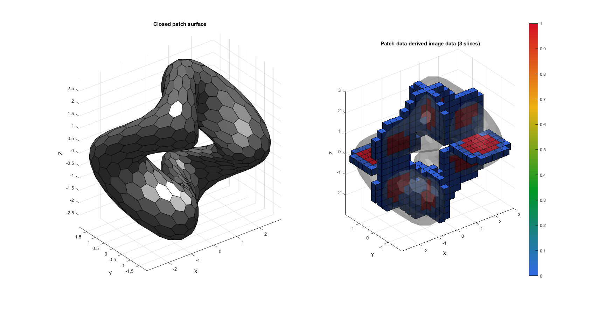
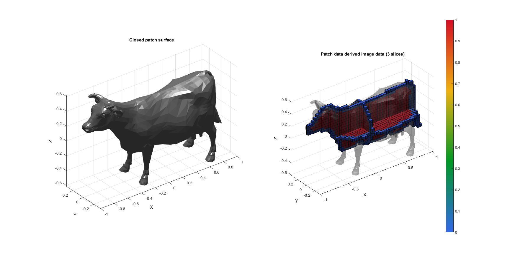
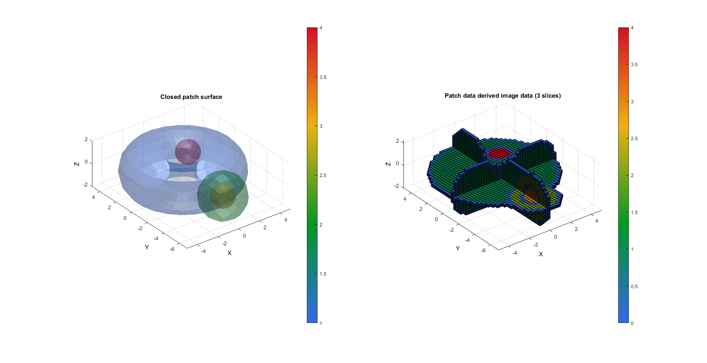

patch2Im
Below is a demonstration of the features of the patch2Im function
Contents
close all; clc; %clear;
Syntax
[M,G,bwLabels]=patch2Im(F,V,C,voxelSize,imOrigin,imSiz);
Description
This function converts patch surface data to images. The input C can be used to set the label for each surface and corresponding image region. The regions are assigned in order according to the color label in C. See also triSurf2Im
Examples
Plot settings
fontSize=10; faceAlpha1=1; faceAlpha2=0.3;
EXAMPLE 1: CONVERTING PATCH DATA WITH A SINGLE BOUNDARY TO AN IMAGE
Defining an example surface model
% Defining a deformed and rotated torus shape r=1; %Sphere radius rc=2; %Central radius nr=16; nc=30; ptype='honey'; [F,V]=patchTorus(r,nr,rc,nc,ptype); [THETA,RHO] = cart2pol(V(:,1),V(:,2)); V(:,3)=V(:,3)+sin(3*THETA); [R,~]=euler2DCM([0.5*pi 0.5*pi 0.*pi]); V=V*R;
% Using |patch2Im| function to convert patch data to image data
[M,G,~]=patch2Im(F,V);
voxelSize=G.voxelSize;
imOrigin=G.origin;
Plotting the results
hf1=cFigure; subplot(1,2,1); title('Closed patch surface','FontSize',fontSize); xlabel('X','FontSize',fontSize);ylabel('Y','FontSize',fontSize); zlabel('Z','FontSize',fontSize); hold on; patch('Faces',F,'Vertices',V,'FaceColor',0.5*ones(1,3),'EdgeColor','k','FaceAlpha',faceAlpha1); camlight('headlight'); lighting flat; axis equal; view(3); axis tight; grid on; set(gca,'FontSize',fontSize); subplot(1,2,2); title('Patch data derived image data (3 slices)','FontSize',fontSize); xlabel('X','FontSize',fontSize);ylabel('Y','FontSize',fontSize); zlabel('Z','FontSize',fontSize); hold on; patch('Faces',F,'Vertices',V,'FaceColor',0.5*ones(1,3),'EdgeColor','none','FaceAlpha',faceAlpha2); L_plot=false(size(M)); L_plot(:,:,round(size(M,3)/2))=1; L_plot(round(size(M,1)/2),:,:)=1; L_plot(:,round(size(M,2)/2),:)=1; L_plot=L_plot & ~isnan(M); [Fm,Vm,Cm]=ind2patch(L_plot,double(M),'v'); [Vm(:,1),Vm(:,2),Vm(:,3)]=im2cart(Vm(:,2),Vm(:,1),Vm(:,3),voxelSize*ones(1,3)); Vm=Vm+imOrigin(ones(size(Vm,1),1),:); patch('Faces',Fm,'Vertices',Vm,'FaceColor','flat','CData',Cm,'EdgeColor','k','FaceAlpha',faceAlpha1); colormap gjet; colorbar; camlight('headlight'); lighting flat; axis equal; view(3); axis tight; grid on; set(gca,'FontSize',fontSize); drawnow;
EXAMPLE 1: CONVERTING PATCH DATA WITH A SINGLE BOUNDARY TO AN IMAGE
Defining an example surface model
[F,V]=graphicsModels(3);
% Defining the full set of possible control parameters voxelSize=(max(V(:,1))-min(V(:,1)))/50; % The output image voxel size. imOrigin=min(V,[],1)-voxelSize; imMax=max(V,[],1)+voxelSize; imSiz=round((imMax-imOrigin)/voxelSize); imSiz=imSiz([2 1 3]); %Image size (x, y corresponds to j,i in image coordinates, hence the permutation) % Using |patch2Im| function to convert patch data to image data [M]=patch2Im(F,V,ones(size(F,1),1),voxelSize,imOrigin,imSiz);
Plotting the results
hf1=cFigure; subplot(1,2,1); title('Closed patch surface','FontSize',fontSize); xlabel('X','FontSize',fontSize);ylabel('Y','FontSize',fontSize); zlabel('Z','FontSize',fontSize); hold on; patch('Faces',F,'Vertices',V,'FaceColor',0.5*ones(1,3),'EdgeColor','none','FaceAlpha',faceAlpha1); camlight('headlight'); lighting flat; axis equal; view(3); axis tight; grid on; set(gca,'FontSize',fontSize); subplot(1,2,2); title('Patch data derived image data (3 slices)','FontSize',fontSize); xlabel('X','FontSize',fontSize);ylabel('Y','FontSize',fontSize); zlabel('Z','FontSize',fontSize); hold on; patch('Faces',F,'Vertices',V,'FaceColor',0.5*ones(1,3),'EdgeColor','none','FaceAlpha',faceAlpha2); L_plot=false(size(M)); L_plot(:,:,round(size(M,3)/2))=1; L_plot(round(size(M,1)/2),:,:)=1; L_plot(:,round(size(M,2)/2),:)=1; L_plot=L_plot & ~isnan(M); [Fm,Vm,Cm]=ind2patch(L_plot,double(M),'v'); [Vm(:,1),Vm(:,2),Vm(:,3)]=im2cart(Vm(:,2),Vm(:,1),Vm(:,3),voxelSize*ones(1,3)); Vm=Vm+imOrigin(ones(size(Vm,1),1),:); patch('Faces',Fm,'Vertices',Vm,'FaceColor','flat','CData',Cm,'EdgeColor','k','FaceAlpha',faceAlpha1); colormap gjet; colorbar; camlight('headlight'); lighting flat; axis equal; view(3); axis tight; grid on; set(gca,'FontSize',fontSize); drawnow;
EXAMPLE 3: CONVERTING PATCH DATA WITH A MULTIPLE BOUNDARIES TO AN IMAGE
% Defining a multi boundary set r=2; %Sphere radius rc=3; %Central radius nr=15; nc=25; ptype='quad'; [F1,V1]=patchTorus(r,nr,rc,nc,ptype); [F2,V2]=quadSphere(2,r,2); V2(:,2)=V2(:,2)-5; [F3,V3]=quadSphere(2,r/2,2); V3(:,2)=V3(:,2)-5; [F4,V4]=quadSphere(3,r/2,2); V4(:,1)=V4(:,1)+2; V4(:,2)=V4(:,2)+2; [F,V,C]=joinElementSets({F1,F2,F3,F4},{V1,V2,V3,V4});
% Defining the full set of possible control parameters voxelSize=r/8; % The output image voxel size. imOrigin=min(V,[],1)-voxelSize; imMax=max(V,[],1)+voxelSize; imSiz=round((imMax-imOrigin)/voxelSize); imSiz=imSiz([2 1 3]); %Image size (x, y corresponds to j,i in image coordinates, hence the permutation) % Using |patch2Im| function to convert patch data to image data [M]=patch2Im(F,V,C,voxelSize,imOrigin,imSiz);
Plotting the results
hf1=cFigure; subplot(1,2,1); title('Closed patch surface','FontSize',fontSize); xlabel('X','FontSize',fontSize);ylabel('Y','FontSize',fontSize); zlabel('Z','FontSize',fontSize); hold on; patch('Faces',F,'Vertices',V,'FaceColor','flat','CData',C,'EdgeColor','none','FaceAlpha',faceAlpha2); camlight('headlight'); lighting flat; axis equal; view(3); axis tight; grid on; set(gca,'FontSize',fontSize); colormap gjet; colorbar; subplot(1,2,2); title('Patch data derived image data (3 slices)','FontSize',fontSize); xlabel('X','FontSize',fontSize);ylabel('Y','FontSize',fontSize); zlabel('Z','FontSize',fontSize); hold on; % patch('Faces',F,'Vertices',V,'FaceColor','flat','CData',C,'EdgeColor','none','FaceAlpha',faceAlpha2); L_plot=false(size(M)); L_plot(:,:,round(size(M,3)/2))=1; L_plot(round(size(M,1)/2),:,:)=1; L_plot(:,round(size(M,2)/2),:)=1; L_plot=L_plot & ~isnan(M); [Fm,Vm,Cm]=ind2patch(L_plot,double(M),'v'); [Vm(:,1),Vm(:,2),Vm(:,3)]=im2cart(Vm(:,2),Vm(:,1),Vm(:,3),voxelSize*ones(1,3)); Vm=Vm+imOrigin(ones(size(Vm,1),1),:); patch('Faces',Fm,'Vertices',Vm,'FaceColor','flat','CData',Cm,'EdgeColor','k','FaceAlpha',faceAlpha1); colormap gjet; colorbar; camlight('headlight'); lighting flat; axis equal; view(3); axis tight; grid on; set(gca,'FontSize',fontSize); drawnow;

GIBBON www.gibboncode.org
Kevin Mattheus Moerman, gibbon.toolbox@gmail.com